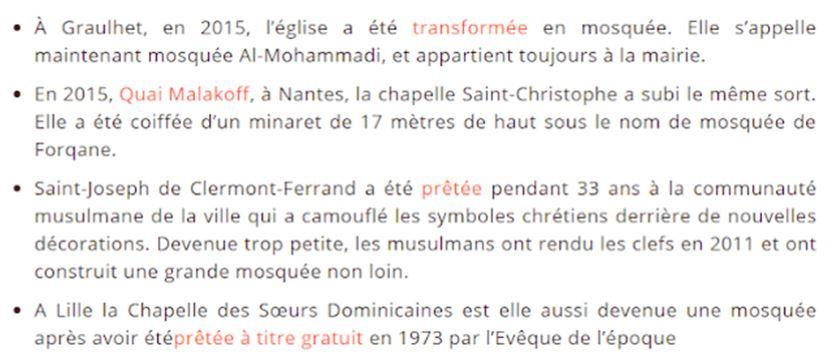

Dire que l'incendie, d'une violence incroyable, qui s'est emparé de Notre-Dame, qui l'a défigurée, est une tragédie ne signifie rien. La douleur est physique au-delà du dicible. Un sentiment d'horreur. Persistant. Le cœur de la France en cendres. Comme si Notre-Dame ne pouvait plus avoir sa place dans ce monde néo-trotskyste. Trop authentique et puissante dans la fadaise de la réalité virtuelle, la concurrence des siècles d'histoire française insupportable à ce cosmopolitisme agressif, l'image de la chrétienté protégeant la France quand cette religion est accusée de tous les maux. Un « accident » de plus. Notre-Dame va-t-elle réussir ce miracle, réveiller le peuple de France, confortablement assoupi dans son relativisme bon ton ? Si ce n'est la conscience, l'instinct de survie va-t-il refaire surface ? Peut-on encore se relever - en l'honneur des bâtisseurs de cathédrales ? C'est tout un pays qui est à reconstruire - avant que ses symboles ne soient dévoyés. Et qu'il ne reste qu'un vide haineux.
Des heures de douleurs, une douleur qui n'en finit pas. La chute de la flèche a sonné le glas. Des siècles de civilisation qui s'écroulent sous nos yeux. Une déchirure. Ce que nous allons en faire sera décisif.
Immédiatement, le Procureur, avant même le début de l'enquête, comme tous les politiques, ne parle que d'une chose : des travaux responsables de cet incendie, évidemment accidentellement. Il restera à éclaircir beaucoup de questions : le feu n'a pas pris tout seul et le chantier était désert, donc qui a mis le feu et comment ?; les chaînes d'infos parlaient de deux foyers, combien y en avait-il ?; un accident de chantier peut provoquer un feu d'une telle puissance, qui en une demi-heure s'attaque à la flèche ?; comment se fait-il que les pompiers aient mis tant de temps à arriver (ils sont plus rapides avec les Gilets Jaunes) ?; les déclarations des politiques nous préparaient à dire Adieu à Notre-Dame, jusqu'à ce que le président Macron, finalement, ne déclare que la structure tiendra ... étrange timing soulevé par Euronews en direct, une explication?
Privilégier, quand le feu brûle encore, l'accident est un parti pris qui va orienter l'enquête, dont rappelons-le, les résultats doivent découler et non devenir des a priori. Or, le contexte de christianophobie dans lequel intervient cet incendie laisse songeur.
L'on rappellera, rien qu'à Paris, les dégradations apportées par un récidiviste Pakistanais, en France depuis 2 mois, contre l'orgue et les vitraux de la basilique des rois de France, la basilique Saint-Denis ce 2 mars. Cet individu1 déclare au tribunal qu'il ne comprend pas ce qu'il fait là. Comme si dégrader un lieu de culte chrétien était une activité des plus ordinaires aujourd'hui. Deux semaines plus tard, Saint-Sulpice2 est incendié, heureusement le feu est rapidement maîtrisé. Des vêtements de SDF auraient été à la source de l'incendie, mais quand même, la piste criminelle est privilégiée. Et maintenant Notre-Dame, dont il ne reste que la carcasse. L'ampleur oblige le pouvoir à s'enfermer dans la rhétorique de l'accident.
Reconnaître l'incendie volontaire, serait ouvrir la piste à l'attentat. Contre la religion chrétienne. Contre les racines de la France. Le multiculturalisme est à ce prix. - la cécité morale. L'accident. Rappelons que la terroriste qui a échoué dans son attentat contre Notre-Dame vient d'être condamnée à 8 ans de prison vendredi3. Ce sont les symboles de la France qui sont visés.
D'une manière générale, les lieux de cultes sont la cible de toute sorte de dégradations et le rythme s'accélère.
Dans le Roannais4, ces jours-ci la porte d'une église fracturée pour la piller, à Lyon une alerte à la bombe dans l'église Saint-Nizier le dimanche des Rameaux, des vols et profanations5 dans des églises du Tarn et de l'Allier, etc. Et il ne s'agit que de ces derniers jours.
Par ailleurs, les églises et chapelles font également l'objet d'un programme de démolition6. Ainsi, depuis 2000, 44 églises ont été détruites (au 1er janvier 2019), dont une datait du 12e siècle et 17 du 19e siècle, pour celles qui sont renseignées. Une liste7 est également dressée des lieux à démolir, en 2016 il comprenait 316 églises, 5 ont été ajoutées en 2017.
Les églises sont la cible de la nouvelle idéologie à un double titre : à la fois, car la religion chrétienne est sous tous les feux et (seule) accusée de tous les maux, ensuite car les symboles de la France, dont les églises font partie, dérangent le nouveau monde, sans racines, centré autour de l'individu-roi.
L'on se rappellera les paroles de ce fanatique d'Apathie8 proposant de raser Versailles ou encore la proposition faite sur le budget participatif de la Ville de Paris de raser le Sacré-Cœur, formulée en ces termes :
La réponse fait encore plus frémir : la Ville de Paris rejette le projet, simplement pour des raisons formelles : le Sacré-Cœur heureusement pas en sa possession.
Avant d'être « anonyme », cette idée a été avancée par le journaliste Claude Askolovitch. Imaginez la réaction s'il s'était agi de raser une synagogue ou une moquée.
Le Sacré-Cœur est, par ailleurs, l'objet d'une véritable cabale de gauche9.
Les hommes politiques ne sont pas en reste. Ainsi en 2013, Ian Brossat, alors leader communiste du Front de Gauche au conseil de Paris, admet ne pas aimer le Sacré-Cœur. «[Il] visait à sanctionner d’une certaine manière les communards. Je pense que s’il y a un endroit où on pourrait faire autre chose, ça serait le Sacré-Cœur », déclare-t-il lors d’un entretien vidéo pour le Journal du Dimanche. Ian Brossat dit vouloir remplacer le monument par « un espace de solidarité ». Lionel Jospin avait aussi son avis sur la question. Quand on lui demande quel monument il raserait s’il en avait le pouvoir, sa réponse est sans équivoque. Pour lui, le Sacré-Cœur est un symbole « d’obscurantisme, de mauvais goût et de réaction ».
Ce que l'on ne peut détruire, il faut le détourner. Notre-Dame a encore ses murs, le peuple de France veut qu'elle soit reconstruite, car nous avons besoin de nos racines, besoin de les voir, besoin de ce monde réel. Sans réalité augmentée, lorsque la réalité est justement historiquement assez puissante. Une cagnotte lancée, les gens se sentent concernés et donnent volontiers. Rapidement, deux réactions. Tusk10 capitalise l'incendie de Notre-Dame en appelant les pays européens à participer à la reconstruction, s'appuyant sur la solidarité bien connue de l'UE et redonnant un projet moral à cette Union qui en est tant dépourvue :
« Je sais que la France pourrait le faire seule mais ce qui est en jeu ici, c'est plus que simplement de l'aide matérielle. L'incendie de la cathédrale Notre-Dame nous a à nouveau fait prendre conscience que nous sommes unis par quelque chose de plus important et de plus profond que des traités. »
La famille Pinault débloque 100 millions d'euros pour la reconstruire. Quel geste ! Et vous qui demandez le retour de l'ISF, vous voyez comme ils sont gentils. Qui dit mieux ? LVMH et la famille Arnault annoncent eux 200 millions. Et l'État dans tout ça ? J'oubliais, la séparation de l'Église et de l'État. Ce qui n'empêche pas les subventions11 publiques ou en Alsace-Moselle la participation directe (l'État a payé 20% de la construction de la Mosquée de Strasbourg), le pouvoir considérant qu'il n'y a pas suffisamment de lieux de prière musulmans. Nous verrons bien ce qui sera fait, Macron lui aussi vient de trouver un « projet pour la France », il faut consolider le peuple, mais il risque de flotter un peu dans le costume des bâtisseurs de cathédrales. Pour cela il faut une âme. Ce qui n'empêche pas la récupération.
Enfin, symboliquement, l'attaque la plus frontale menée en France contre le christianisme est la conversion des églises en mosquées. Si cela a provoqué des remous, le peuple catholique n'étant pas tout à fait écrasé, la pratique s'est instaurée :
Saint-Denis, Saint-Sulpice et Notre-Dame. Cela fait beaucoup. Beaucoup de symboles, beaucoup de haine. Il est urgent de sortir de l'hypocrisie « du monde merveilleux des Bisounours », le contexte dans lequel l'incendie de Notre-Dame a eu lieu nous y oblige. Avant qu'il n'y ait plus de symboles et qu'il ne reste que la haine.
Partager cette page